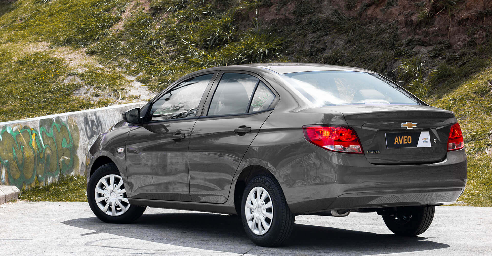
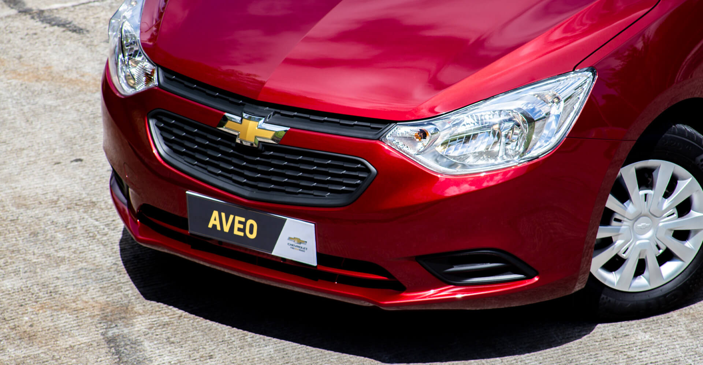
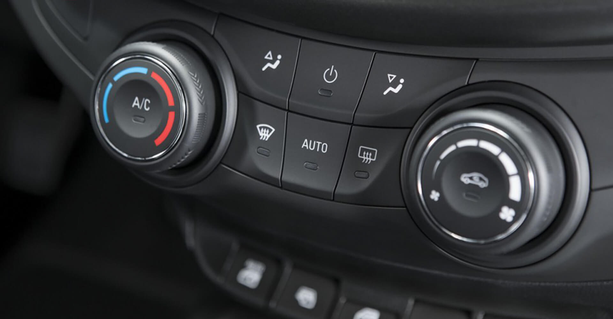
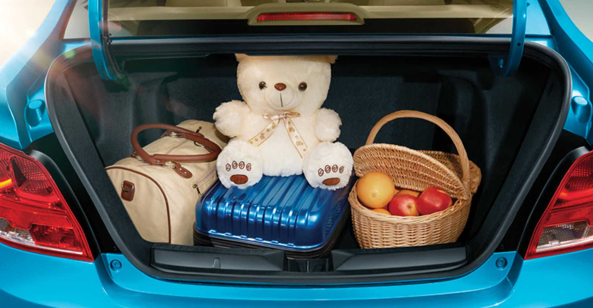
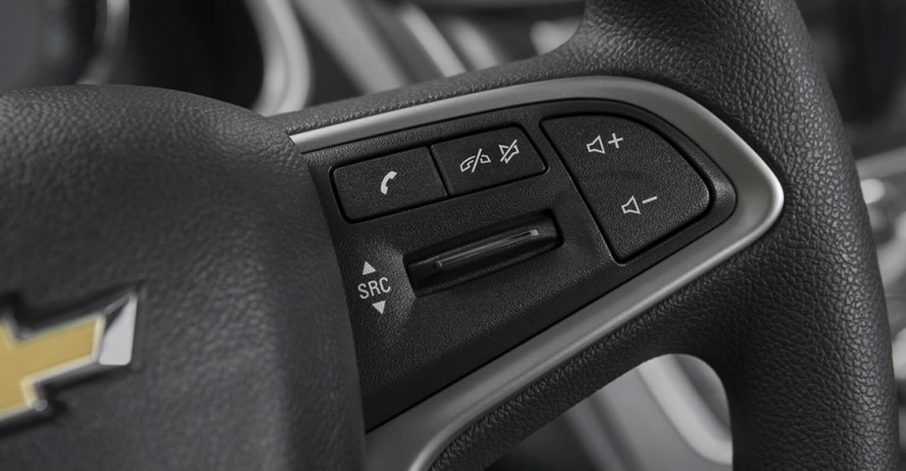

DISEÑO
El Chevrolet Aveo NG cuenta con todo lo necesario para acompañarte día a día convirtiéndolo en tu mejor aliado, aunque sigue manteniendo su esencia práctica y eficiente, el nuevo Aveo NG cuenta con equipamiento mejorado, mayor comodidad, seguridad y un look renovado que lo convertirá en el auto para todos.
PARACHOQUES TRASERO
Protege tu parachoques trasero de muescas y rayones. Nuestro protector para parachoques trasero de acero inoxidable duradero te permite cargar y descargar tus equipos sin peligro.
DISEÑO FRONTAL

AIRE ACONDICIONADO

BAHÚL

INTERIOR
Control por computadora
Control de audio

elegantes placas de umbral.
Sensores de estacionamiento, parte trasera
Ubicados discretamente dentro del parachoques, los sensores de estacionamiento traseros46 informan al conductor de las obstrucciones detrás del vehículo con una alarma sonora.